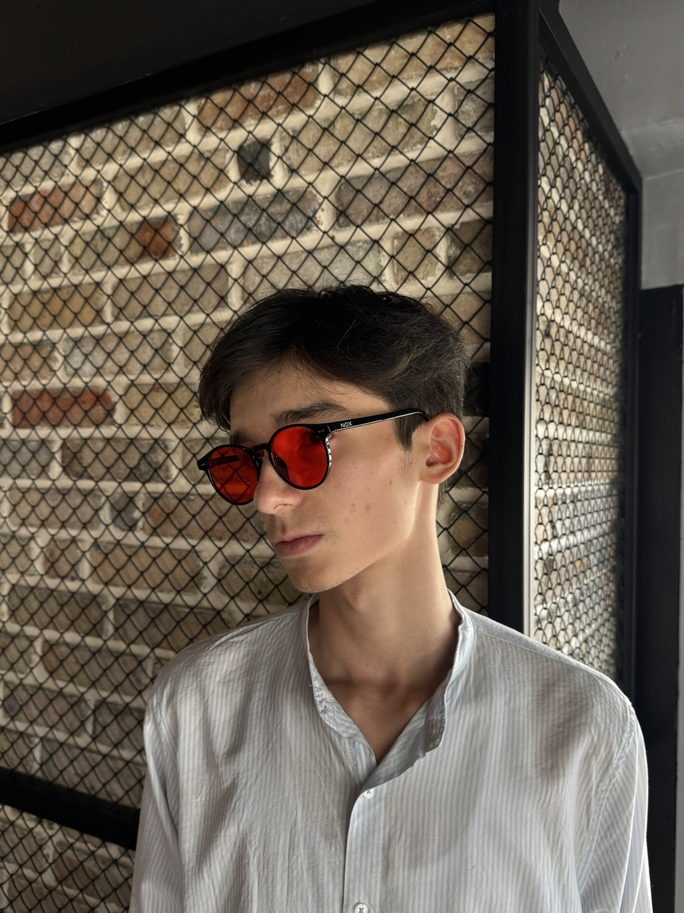
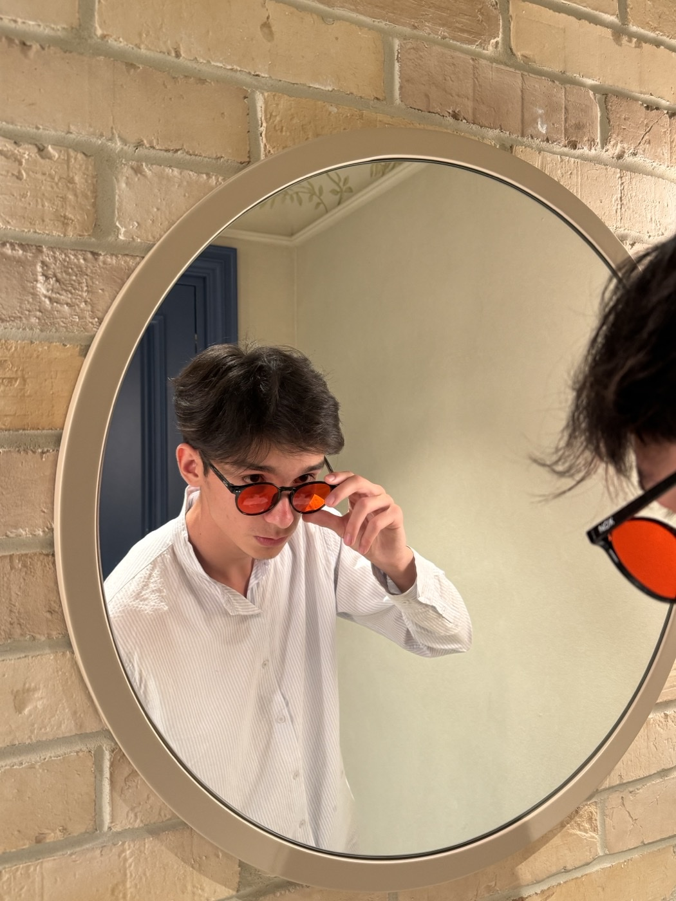

Вечерние циркадные очки · Ташкент
Защитите мелатонин. Верните глубокий сон.
Блокируют 97.8% синего и зелёного спектра от экранов и вечерних ламп. Наденьте за 2–3 часа до сна, чтобы глаза расслабились, а организм легко перешел в фазу восстановления.
Естественный мелатонин
Красный фильтр отсекает частоты до 550 нм, давая мозгу биологический сигнал о наступлении ночи.
Снятие глазного спазма
Убирают сухость, резь и зрительное напряжение после долгого рабочего дня за монитором и телефоном.
Глубокие фазы сна
Увеличивают долю восстановительного медленного и REM-сна. Утреннее пробуждение становится лёгким.
The Frame
The Diamond — геометрия и лёгкость.

Красный светофильтр 97.8% · TR90
The Diamond
Универсальная форма, гармонично подходящая для мужских и женских лиц. Сверхлёгкий швейцарский полимер TR90 весом 22 грамма обеспечивает идеальную посадку без давления на виски.
Очки The Diamond + премиальный жесткий футляр Nox + салфетка из микрофибры + PDF «Гид по сну Nox Protocol».
Две пары The Diamond для вас и близкого человека. Полный комплект к каждой паре + бесплатная доставка по Ташкенту.

Бесплатный подарок к заказу
Гид по сну Nox Sleep Protocol
Очки — мощный оптический инструмент, но системный результат строится на привычках. К каждой паре очков мы дарим авторский PDF-протокол вечерней гигиены:
-
01
Правило 2–3 часов Точное время надевания очков после заката для запуска каскада мелатонина.
-
02
Управление домашним светом Как приглушить люстры и переключить квартиру на теплый рассеянный свет.
-
03
Температурный оптимум (18–20°C) Физиология охлаждения тела для глубоких фаз восстановительного сна.
-
04
Цифровой закат Простые вечерние ритуалы за 30 минут до сна без стресса от уведомлений.
Наука и оптика
97.8%
синего и зелёного спектра отфильтровано
Обычные прозрачные компьютерные очки задерживают лишь 10–20% фиолетового спектра и не защищают мелатонин. Оптические линзы Nox глубокого красного цвета отсекают сине-зелёный спектр до 550 нм — именно те волны, которые разрушают ночной гормон сна.
- Оптический полимер CR-39 с защитой UV400
- Глубокий рубиновый вечерний светофильтр (до 550 нм)
- Сверхлёгкая оправа TR90 (весит всего 22 г)
- Антибликовое покрытие и защита от микроцарапин
Сервис в Ташкенте
Как получить очки в Ташкенте
Заказ в Telegram
Напишите нам в чат в пару кликов без предоплаты. Менеджер свяжется с вами за 2–5 минут и согласует адрес.
Доставка день в день
Отправляем курьером через сервис Yandex Go по всему Ташкенту — очки приедут уже через 1–2 часа.
Оплата при получении
Оплатите курьеру через Click, Payme или наличными. Если очки вам не подойдут, есть возможность возврата.
Вопросы и ответы
Всё, что важно знать о Nox.
Почему линзы именно красные, а не прозрачные или жёлтые?
Клетки сетчатки глаза содержат меланопсин — фотопигмент, реагирующий на синий и зеленый спектр до 550 нм. Прозрачные очки отсекают лишь малую часть (10–20%), а желтые не блокируют зеленый диапазон. Только глубокий красный фильтр нейтрализует обе зоны спектра, позволяя мозгу начать естественную выработку мелатонина.
Когда и как правильно носить очки?
Надевайте очки за 2–3 часа до запланированного сна, если вы работаете за экраном компьютера, смотрите телефон, телевизор или находитесь под ярким освещением. Снимайте очки непосредственно перед сном, когда выключаете свет в спальне.
Подойдет ли оправа The Diamond под мою форму лица?
Да, The Diamond имеет универсальную геометрию (unisex), разработанную для большинства типов мужских и женских лиц. Оправа выполнена из швейцарского полимера TR90 с памятью формы — она эластична, весит всего 22 грамма и не сдавливает виски.
Как работает доставка и оплата в Ташкенте?
Мы отправляем заказ через Yandex Go в день оформления. Оплата курьеру при получении через Click, Payme или наличными. Если вам что-то не подойдёт, есть возможность возврата.